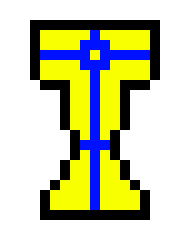
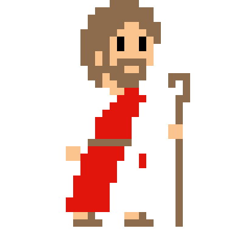
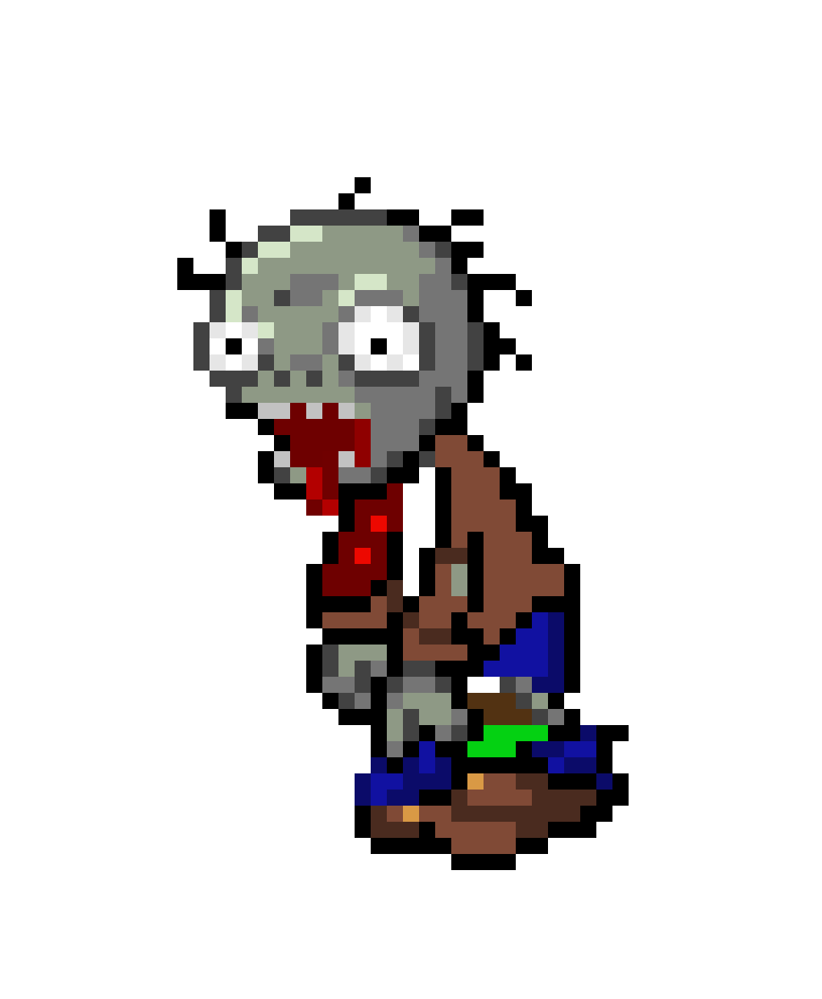
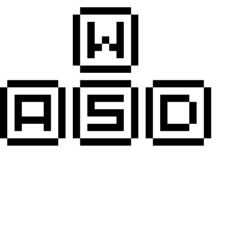

Help Jesus to prevent the Holy Grail get stolen by the evil Zombies.
Use the W key to move up, the S key to move down, the A key to move left and the D key to move right
- Only have one fish as a weapon? - No my friend, it's two!
That's rigt! to multiply the fishes you'll have to press the K key and use them as a weapon
